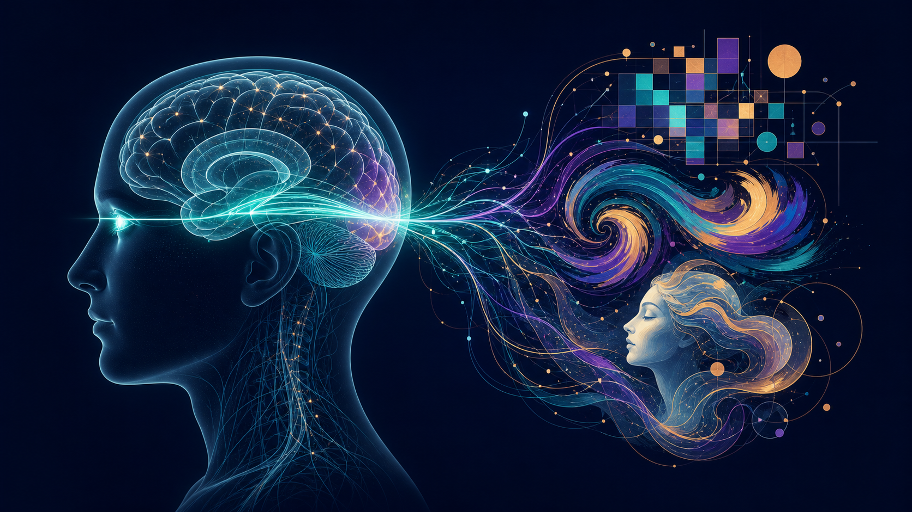
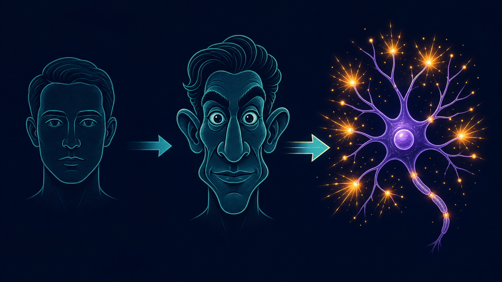
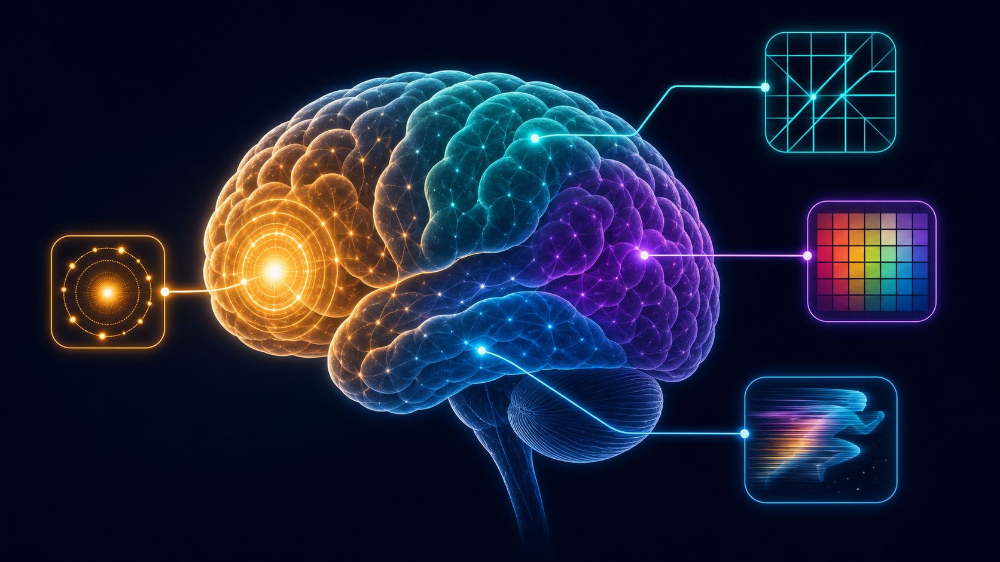
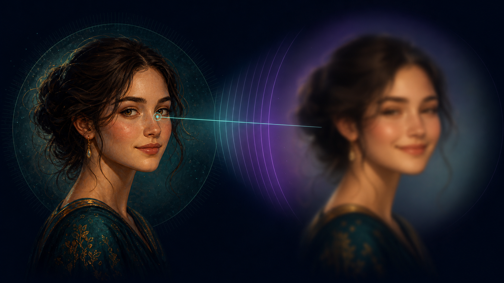
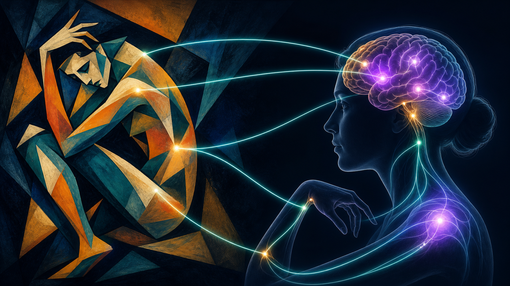

你的大腦如何「看見」藝術？——神經美學解碼名畫的祕密
蒙娜麗莎的微笑為什麼若隱若現？莫內的太陽為什麼會「跳動」？席勒扭曲的身體為什麼讓你不安？答案不在畫布上，而在你的大腦裡。藝術家其實是一群天才「神經駭客」——他們憑直覺逆向工程了你的視覺與情緒系統。

我們習慣以為，看畫就像拍照：光線進入眼睛，大腦忠實地把畫面「記錄」下來。但過去半世紀的神經科學徹底推翻了這個直覺。視覺不是被動的接收，而是大腦主動的「猜測」與「建構」。視網膜送進來的資訊其實少得可憐，是大腦結合過去的記憶與內建的規則，「腦補」出我們以為看到的豐富世界 [2][6]。
而藝術之所以能感動我們，正是因為藝術家——多半出於直覺而非理論——找到了駭入這套大腦運算系統的「鑰匙」。這門研究「大腦如何感受美與藝術」的學問，就叫做神經美學（neuroaesthetics）。這篇文章帶你認識四位奠基者，以及他們解開的名畫祕密。
一、Ramachandran：藝術有「文法」，而且寫在基因裡
印度裔神經科學家 Ramachandran 提出一個大膽主張：藝術背後存在一套普遍法則，跨越文化、甚至跨越物種 [1][5]。他和同事在 1999 年的論文〈藝術的科學〉中列出了這些「藝術經驗法則」。其中最有名的是兩個：
峰值偏移（Peak Shift）：為什麼漫畫比照片更像本人
動物實驗發現：如果老鼠學會「長方形有獎勵、正方形沒有」，牠之後對「更細更長」的長方形反應會更強烈——比原本的獎勵刺激還興奮。這就是峰值偏移。套用到藝術，藝術家會把一個對象「偏離平均」的特徵抽取出來、再放大。一幅好的人像漫畫之所以「比本人還像本人」，正是因為它誇大了那張臉與「平均臉」的差異，直接打中大腦的辨識神經元 [1][5]。印度古代雕像那誇張的腰臀比例與「三折枝」姿態，也是同一招。

群組化與「Aha!」：大腦破解偽裝的快感
大腦會把零散的色塊、線條自動「黏合」成完整物件。這個能力的演化目的其實很殘酷——是為了在斑駁的樹叢中一眼認出躲藏的獅子。每當大腦成功「拼出」一個隱藏的圖案，就會釋放一點愉悅的獎勵訊號，也就是那聲「啊哈！」。印象派的色塊、需要你瞇眼才看得出形體的畫作，玩的都是這套感知解謎的遊戲 [5]。
其他法則還包括：隔離（只留輪廓線的素描，反而比全彩照片更動人，因為注意力被集中了）、捉迷藏（薄紗下的形體比全裸更誘人，因為大腦愛解謎）、對稱（對稱是健康、沒有寄生蟲的演化指標）等等 [1][5]。
二、Zeki：你的大腦有好幾個「美感部門」
視覺神經科學的奠基者之一 Zeki 發現，視覺腦不是鐵板一塊，而是由許多功能分工的模組組成：有專門處理顏色的 V4、專門處理運動的 V5、專門處理臉孔的梭狀回……而不同的藝術流派，恰好各自「點亮」了不同的模組 [2]。

| 藝術流派 | 對應的大腦模組 | 祕密 |
|---|---|---|
| 蒙德里安的幾何抽象 | V1–V3 方向選擇細胞 | 純粹的垂直、水平線條，正好是初級視覺皮層神經元最愛的「視覺代碼」。 |
| 野獸派（馬諦斯）的奔放色彩 | V4（色彩中樞） | 把色彩從形體中解放，直接餵養大腦的色彩計算系統。 |
| 動力藝術（Calder 的動態雕塑） | V5（運動中樞） | Calder 刻意只用黑白——因為色彩（V4）會「干擾」運動感知（V5）。他憑直覺避開了模組打架。 |
更驚人的是，Zeki 團隊用功能性磁振造影（fMRI）找到了「美」的共同地址。無論你看的是肖像、風景還是抽象畫，只要你覺得「美」，大腦的內側眼眶額葉皮質（mOFC）——一個和獎賞、愉悅有關的區域——就會活化 [6]。後續研究甚至發現，視覺的美與「音樂」的美，活化的是同一塊腦區，暗示大腦裡真的存在一個抽象的「美感中樞」 [7]。
三、Livingstone：蒙娜麗莎微笑的科學解答
哈佛神經生物學家 Livingstone 把藝術錯覺拆解到「細胞」層級。她最著名的貢獻，是解開了蒙娜麗莎的微笑之謎 [6]。
關鍵在於：我們眼睛中央（中央凹）負責看細節，眼角餘光（周邊視覺）只能看粗略的明暗。而蒙娜麗莎的微笑，主要「藏」在粗略的低解析度陰影裡。所以——
當你直視她的嘴唇，用的是看細節的中央視覺，微笑就消失了；當你看她的眼睛、視線移開嘴角，用的是周邊視覺，微笑反而浮現。難怪她的笑容如此「神祕、捉摸不定」——它真的會隨你的目光而出現或消失。

同樣的生物學還能解釋更多名畫的「魔法」 [6]：
- 莫內《印象·日出》的太陽會「跳動」：那顆橘紅色太陽和藍灰背景的「亮度」幾乎相同（稱為等明度）。負責定位的「Where 系統」其實是色盲的，看不到只有顏色差異的邊界，於是太陽的位置變得不確定，看起來就在閃爍、脈動。
- 林布蘭的光影立體感：顏料能呈現的明暗對比其實很有限，但林布蘭利用大腦「只在乎邊界對比、忽略漸進亮度」的特性（側向抑制），用約 20 倍的顏料對比，騙出了上百倍的亮度錯覺。
有趣的是，奠定「臉部辨識細胞」研究的經典論文（2006 年發表於《Science》），正是出自 Livingstone 的實驗室——他們在猴腦中找到了「整片都是臉孔細胞」的區域 [8]。這也解釋了為什麼誇大五官的漫畫，能更快抓住我們的注意力。
四、Kandel：藝術完成於「觀看者」的腦中
諾貝爾獎得主 Kandel 在《洞察的年代》中，把視角拉回 1900 年的維也納——那個佛洛伊德、克林姆、席勒齊聚的黃金時代 [7]。他提出一個迷人的概念：觀者的參與（the beholder's share）。
一幅畫本身是「不完整」的。它充滿模糊與留白，必須靠觀看者用自己的記憶、情緒去填補、去解讀，作品才算真正「完成」。所以同一幅畫，在每個人腦中其實長得不一樣 [7]。
那麼，表現主義畫家（如席勒、柯克西卡）那些扭曲、焦慮的人像，為什麼能讓我們「感同身受」？Kandel 的答案是鏡像神經元：當你凝視席勒扭曲的自畫像，你大腦的運動系統會不自覺地「模擬」那個扭曲的姿勢，再透過身體回饋傳回大腦。於是你不只是「看到」焦慮，而是真的在身體裡「感受到」了焦慮 [7]。

五、把四個人拼起來：一張完整的地圖
這四位看似各說各話，其實在描述同一座山的不同坡面：
| 學者 | 主要貢獻 | 關鍵詞 |
|---|---|---|
| Ramachandran | 藝術的普遍法則 | 峰值偏移、群組化、超常刺激 [1][5] |
| Zeki | 視覺模組與美感中樞 | V1–V5、mOFC [2][6] |
| Livingstone | 視覺錯覺的生物機制 | 側向抑制、等明度、空間頻率 [6] |
| Kandel | 情緒、同理心與整合 | 觀者的參與、鏡像神經元 [7] |
他們的共同結論是：藝術 = 對演化而來之神經迴路的「超常刺激」。從四萬年前的史前維納斯雕像，到今天的表現主義畫作，人類一直在用誇大與簡化的視覺技巧，撩撥同一組古老的大腦線路 [7]。
六、這不只是好玩——它正在進入醫學
神經美學近年已從「解釋名畫」走向臨床應用。2024–2025 年的多篇回顧指出 [11][12][13]：
- 美感體驗由一個廣泛的大腦網絡共同支撐，融合了「情緒-價值」「感覺-動作」「意義-知識」三套歷程。
- 所謂「米開朗基羅效應」：觀看藝術之美能活化感覺運動區，可能促進中風或神經損傷病人的動作復健與參與動機 [12]。
- 在失智等神經退化疾病中，審美能力的保留與變化，正被研究為新的評估與治療前沿 [11]。
Take-home Messages
- 看畫不是拍照。視覺是大腦主動的猜測與建構，藝術家操弄的是這套運算系統。
- 藝術有「文法」。峰值偏移、群組化、隔離等普遍法則，讓誇大的特徵比真實更能打動大腦。
- 美感有「地址」。不同藝術流派點亮不同視覺模組，而「美」本身收斂於內側眼眶額葉皮質（mOFC）。
- 名畫的魔法是生物學。蒙娜麗莎的微笑、莫內跳動的太陽，都源自視覺系統的解析度與亮度機制。
- 藝術完成於你的腦中。觀者的參與與鏡像神經元，讓我們不只「看到」情緒，更「感受到」情緒。
參考資料
- Ramachandran VS. The Tell-Tale Brain: A Neuroscientist's Quest for What Makes Us Human. New York: W. W. Norton & Company; 2011.
- Zeki S. Inner Vision: An Exploration of Art and the Brain. Oxford & New York: Oxford University Press; 1999.
- Ramachandran VS, Hirstein W. The Science of Art: A Neurological Theory of Aesthetic Experience. Journal of Consciousness Studies. 1999;6(6–7):15–51.
- Livingstone M. Vision and Art: The Biology of Seeing. New York: Harry N. Abrams; 2002（修訂版 2014）. ／ Kawabata H, Zeki S. Neural correlates of beauty. Journal of Neurophysiology. 2004;91(4):1699–1705.
- Kandel ER. The Age of Insight: The Quest to Understand the Unconscious in Art, Mind, and Brain, from Vienna 1900 to the Present. New York: Random House; 2012. ／ Ishizu T, Zeki S. Toward a brain-based theory of beauty. PLoS ONE. 2011;6(7):e21852.
- Tsao DY, Freiwald WA, Tootell RBH, Livingstone MS. A cortical region consisting entirely of face-selective cells. Science. 2006;311(5761):670–674.
- Frontiers in Human Neuroscience（2025）. Beauty in the shadow of neurodegenerative disease: a narrative review on aesthetic experience, neural mechanisms, and therapeutic frontiers. 2025.
- Frontiers in Psychology（2025）. Neuroaesthetics: exploring the role of aesthetic experience in neurorehabilitation. 2025.
- （2025 scoping review）. A Narrative Scoping Review of Neuroaesthetics and Objective Understanding of Human Appearance. PMC; 2025.